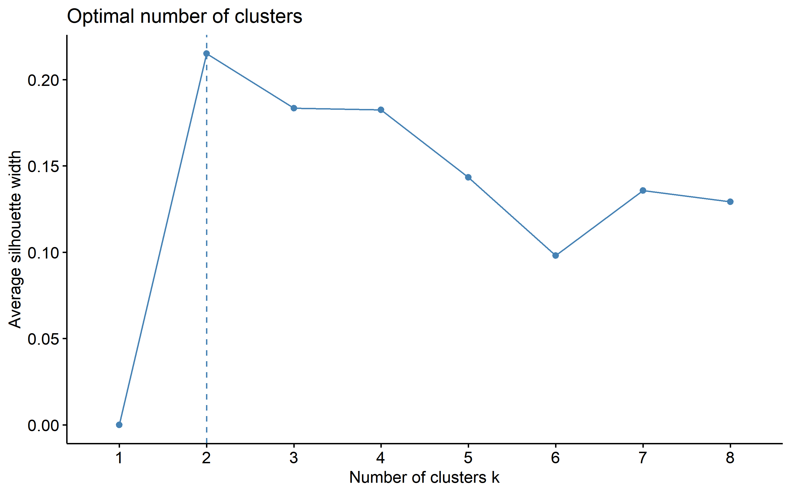
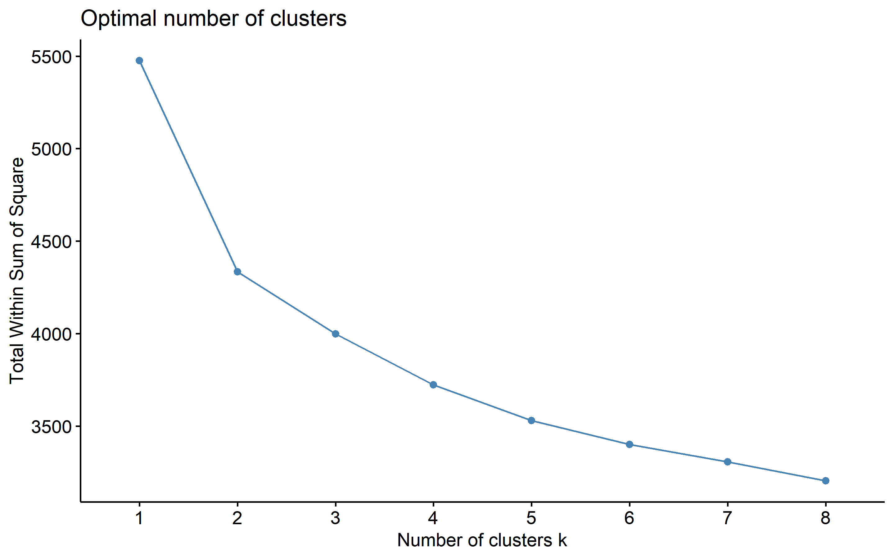
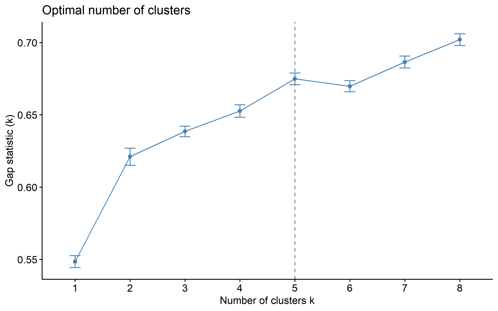
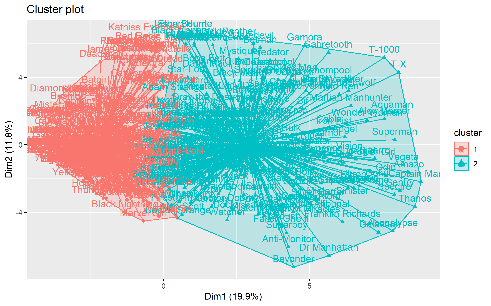
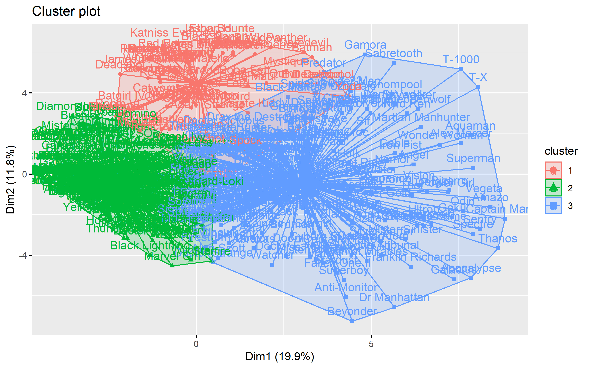
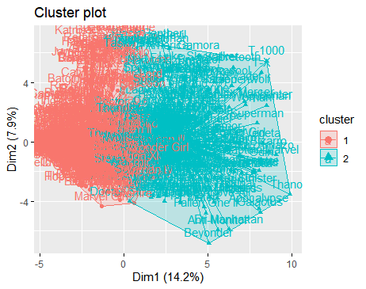
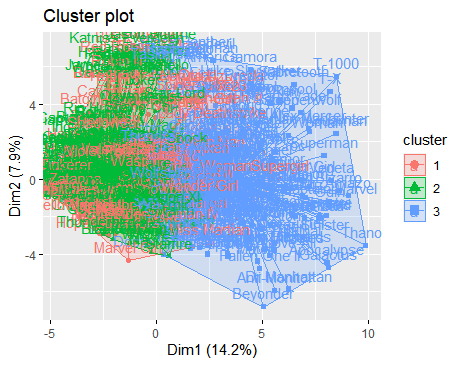

pacman::p_load(tidyverse ,tidymodels,fpc, factoextra, psych, hopkins, cluster, knitr)
knitr::opts_chunk$set(cache = TRUE, cache.lazy = FALSE, warning = FALSE,
message = FALSE, echo = TRUE, dpi = 180,
fig.width = 8, fig.height = 5)Clustering
Tarefa de Clustering
Abordagem escolhida
Para esta tarefa, optei pelo algoritmo K-means, convertendo os dados categóricos em binários. Minha escolha recai nessa direção, pois apesar de eu não estar familiarizado com métodos de agrupamento para dados categóricos, compreendo que sua interpretação é mais direta. Portanto, para simplificar, optei por transformar as variáveis categóricas em binárias usando a codificação one-hot.
Sei que existem outras técnicas para lidar com esse tipo de dados, como o método k-prototype, por exemplo. Entretanto, a implementação dessa abordagem, que presumo ser mais apropriada, começou a consumir considerável tempo. Essa circunstância motivou-me a alterar minha estratégia.
Essa mudança de abordagem teve como objetivo permitir um progresso mais eficiente em minha análise.
Vamos começar carregando os dados.
Ao carregar os dados eu alterei a classe das colunas de logic para character. Isso vai me facilitar mais para frente.
dados_prontos <- readr::read_csv("dados_limpos.csv") %>%
dplyr::select(-1) %>%
mutate(
across(where(is.logical), as.character)
)“Corrigindo” os dados
Vou começar criando um plano de ação para lidar com diversos “problemas” nos dados, incluindo o fato de o K-means ser um algoritmo projetado para dados numéricos, o que requer a transformação das variáveis categóricas em dummies.
Aqui está o que será feito:
Remoção da coluna “name”: A coluna “name” será removida.
Tratamento de valores faltantes em variáveis categóricas: Os valores faltantes nas variáveis categóricas serão tratados usando um modelo KNN (K-Nearest Neighbors).
Tratamento de valores faltantes em variáveis numéricas: Os valores faltantes nas variáveis numéricas serão tratados usando os valores médios da coluna.
Tratamento de categorias desbalanceadas: Categorias com desbalanceamento serão agrupadas em uma categoria “other”.
Transformação de categorias em binárias: As categorias serão transformadas em variáveis binárias usando a codificação one-hot.
Normalização de colunas numéricas: As colunas numéricas serão normalizadas, e uma transformação Box-Cox será testada para aproximar a distribuição da normalidade.
Remoção de variáveis altamente dispersas e desbalanceadas: A função step_nzv() será usada para remover variáveis que são altamente dispersas e desbalanceadas.
(Apenas para esclarecer, ao remover as variáveis com baixa frequência relativa, minha intenção era a mesma do método step_nzv(). Após realizar alguns testes, considerando a remoção e a não remoção das variáveis, optei por removê-las da maneira descrita no documento de limpeza de dados e, por uma questão de segurança, escolhi também utilizar a função mencionada.)
recipe_kmeans <-
recipe(~ ., data = dados_prontos) %>%
step_rm(name, gender, alignment,
eye_color,hair_color,race,
publisher,categoria_imc,
height, imc, weight) %>%
#step_impute_knn(all_nominal_predictors(), neighbors = 5) %>%
#step_other(all_nominal_predictors(), threshold = 0.1) %>%
step_impute_mean(all_numeric_predictors()) %>%
step_normalize(all_numeric_predictors()) %>%
#step_BoxCox(all_numeric_predictors()) %>%
step_dummy(all_nominal_predictors(), one_hot = TRUE) %>%
step_nzv()Após conduzir alguns testes, decidi remover algumas das variáveis. Essa escolha será devidamente justificada mais adiante; por enquanto, menciono isso apenas para explicar as linhas comentadas na seção de criação da “receita” dos dados.
“Preparando” a receita e visualizando os dados.
#vamos ver como os dados ficaram
dados_cluster <-
recipe_kmeans %>%
prep() %>%
bake(new_data = NULL)
head(dados_cluster)# A tibble: 6 × 47
n_poderes agility_FALSE. agility_TRUE. accelerated_healing_FALSE.
<dbl> <dbl> <dbl> <dbl>
1 -0.198 1 0 0
2 1.38 0 1 0
3 -1.25 1 0 1
4 -0.0221 1 0 0
5 1.03 1 0 1
6 0.505 1 0 1
# ℹ 43 more variables: accelerated_healing_TRUE. <dbl>,
# durability_FALSE. <dbl>, durability_TRUE. <dbl>, stealth_FALSE. <dbl>,
# stealth_TRUE. <dbl>, energy_absorption_FALSE. <dbl>,
# energy_absorption_TRUE. <dbl>, flight_FALSE. <dbl>, flight_TRUE. <dbl>,
# marksmanship_FALSE. <dbl>, marksmanship_TRUE. <dbl>,
# weapons_master_FALSE. <dbl>, weapons_master_TRUE. <dbl>,
# longevity_FALSE. <dbl>, longevity_TRUE. <dbl>, intelligence_FALSE. <dbl>, …Durante a etapa de preparação dos dados, removi os nomes dos personagens. Agora, irei reinseri-los como nomes das linhas. Isso possibilitará visualizar os nomes dos personagens nos clusters.
#colocando os nomes novamente nos dados
dados_cluster <- tibble(dados_prontos[,1], dados_cluster) %>%
column_to_rownames(var = "name")Pré-diagnósticos - tendência de agrupamento.
Antes de iniciarmos, vamos verificar a tendência dos dados para serem clusterizados.
hopkins::hopkins(dados_cluster)[1] 0.9971948Um valor de aproximadamente 1 em um teste de Hopkins indica que os pontos no conjunto de dados têm uma tendência significativa de se agruparem mais próximos uns dos outros do que de pontos gerados aleatoriamente. Em outras palavras, um valor próximo de 1 sugere que há uma forte tendência de formação de clusters nos seus dados, o que é um indicativo positivo para a aplicação de algoritmos de clusterização.
Vamos prosseguir com mais um teste.
cor_mix <- model.matrix(~0+., data = dados_cluster) %>%
cor(use = "pairwise.complete.obs")
psych::KMO(cor_mix)Error in solve.default(r) :
Lapack routine dgesv: system is exactly singular: U[21,21] = 0Kaiser-Meyer-Olkin factor adequacy
Call: psych::KMO(r = cor_mix)
Overall MSA = 0.5
MSA for each item =
n_poderes agility_FALSE.
0.5 0.5
agility_TRUE. accelerated_healing_FALSE.
0.5 0.5
accelerated_healing_TRUE. durability_FALSE.
0.5 0.5
durability_TRUE. stealth_FALSE.
0.5 0.5
stealth_TRUE. energy_absorption_FALSE.
0.5 0.5
energy_absorption_TRUE. flight_FALSE.
0.5 0.5
flight_TRUE. marksmanship_FALSE.
0.5 0.5
marksmanship_TRUE. weapons_master_FALSE.
0.5 0.5
weapons_master_TRUE. longevity_FALSE.
0.5 0.5
longevity_TRUE. intelligence_FALSE.
0.5 0.5
intelligence_TRUE. super_strength_FALSE.
0.5 0.5
super_strength_TRUE. telepathy_FALSE.
0.5 0.5
telepathy_TRUE. energy_blasts_FALSE.
0.5 0.5
energy_blasts_TRUE. stamina_FALSE.
0.5 0.5
stamina_TRUE. super_speed_FALSE.
0.5 0.5
super_speed_TRUE. teleportation_FALSE.
0.5 0.5
teleportation_TRUE. enhanced_senses_FALSE.
0.5 0.5
enhanced_senses_TRUE. immortality_FALSE.
0.5 0.5
immortality_TRUE. reflexes_FALSE.
0.5 0.5
reflexes_TRUE. invulnerability_FALSE.
0.5 0.5
invulnerability_TRUE. force_fields_FALSE.
0.5 0.5
force_fields_TRUE. enhanced_hearing_FALSE.
0.5 0.5
enhanced_hearing_TRUE. uncommon_power_FALSE.
0.5 0.5
uncommon_power_TRUE.
0.5 Um valor de KMO mais baixo (por exemplo, abaixo de 0.5) pode sugerir que as correlações entre as variáveis não são muito robustas, o que pode tornar a interpretação dos fatores mais desafiadora.
Os resultados dos testes acabaram sendo um pouco conflitantes, no entanto, vamos continuar.
Número ideal de clusters
Vamos determinar o número ideal de clusters para nossos dados. Faremos isso usando a função fviz_nbclust do pacote factoextra e três métodos empíricos diferentes: silhouette, wss e gap_stat.
factoextra::fviz_nbclust(dados_cluster,
FUNcluster = kmeans,
method = c("silhouette"),
k.max = 8,
nboot = 100)
factoextra::fviz_nbclust(dados_cluster,
FUNcluster = kmeans,
method = c("wss"),
k.max = 8,
nboot = 100)
factoextra::fviz_nbclust(dados_cluster,
FUNcluster = kmeans,
method = c("gap_stat"),
k.max = 8,
nboot = 100)
Os resultados indicam que o número ideal de grupos pode estar entre 2 e 3.
usando k-mean
Vamos testar os valores de 2 e 3 grupos.
Dois Grupos
set.seed(456)
k2<- stats::kmeans(dados_cluster, centers = 2, nstart = 50)factoextra::fviz_cluster(k2,data = dados_cluster, star.plot = TRUE)
Três grupos
set.seed(789)
k3 <- stats::kmeans(dados_cluster, centers = 3, nstart = 50)factoextra::fviz_cluster(k3,data = dados_cluster, star.plot = TRUE)
Eu conduzi testes utilizando diferentes variáveis. A configuração de cluster que apresentou os melhores resultados com todos os dados disponíveis foi a de 2 grupos. No entanto, ao realizar um teste apenas com as variáveis relacionadas aos poderes dos personagens, o resultado mais favorável foi obtido com três grupos.
Os resultados para dois grupos foram bastante consistentes, tanto considerando quanto desconsiderando as informações dos dados em heroes_information. Porém, quando avaliamos três grupos, os resultados com a inclusão dessas variáveis não demonstraram uma separação tão clara.
A seguir estão os resultados obtidos com todas as variáveis para fins de comparação.
Resultado com todas as variáveis para 3 clusters:

Resultado com todas as variáveis para 3 clusters:

Avaliando os clusters
Vou comparar somente os resultados obtidos após a remoção das variáveis provenientes dos dados heroes_information.
Resultados para 2 clusters:
cls <- cluster.stats(dados_cluster, k2$cluster)
cls$pearsongamma[1] 0.0004729797cls$entropy[1] 0.6851916Resultados para 3 clusters:
cls <-cluster.stats(dados_cluster, k3$cluster)
cls$pearsongamma[1] 0.00096131cls$entropy[1] 0.954733Ambos os resultados possuem valores do índice Pearson Gamma próximos de 0, o que sugere que há uma associação limitada entre os clusters comparados.
No entanto, o valor de entropia foi menor para o resultado de dois clusters, 0.68. Valores de entropia mais próximos de 0 indicam uma melhor separação entre os clusters.
Outra abordagem para avaliar os resultados é utilizar a proporção TotWithinSS/TotSS. Essa proporção auxilia na avaliação da qualidade do agrupamento, indicando o quanto da variabilidade total dos dados é explicada pelos clusters. Quanto maior a proporção, mais eficaz é o agrupamento.
A proporção explicada nos resultados com dois grupos é:
k2$tot.withinss / k2$totss[1] 0.7915277A proporção explicada nos resultados com dois grupos é:
k3$tot.withinss / k3$totss[1] 0.7301921Os resultados foram bastante semelhantes, mas na minha opinião, a divisão em três grupos parece mais apropriada, mesmo que os resultados sejam um pouco inferiores.
Uma explicação possível, que se aplica tanto a dois grupos quanto a três grupos, é a seguinte:
Conclusão
Minha interpretação dos agrupamentos é a seguinte:
Os personagens podem ser divididos em três grupos: o Grupo 2 consiste em personagens mais fracos, provavelmente humanos com algumas habilidades. O Grupo 1 engloba os personagens intermediários, com certo nível de poder. E o Grupo 3 é composto pelos personagens mais fortes.
A utilização das variáveis vindas dos dados heroes_information, parece ter causado uma pior separação quando usado 3 grupos.
A descrição inicial da preparação dos dados acabou ficando um pouco mais concisa devido à remoção de parte dos dados após os testes.
Resposta das perguntas
- Qual algoritmo você escolheu e por quê?
Conforme mencionado inicialmente, a escolha do algoritmo K-means foi motivada pelo fato de ser relativamente simples de entender e interpretar. Além disso, o K-means é altamente flexível, podendo ser aplicado em uma ampla gama de domínios e tipos de dados. Ele não demanda suposições específicas sobre a distribuição dos dados, o que o torna uma escolha versátil para diferentes cenários.
Embora o K-means não exija suposições específicas sobre a distribuição dos dados, você realizou tentativas nesse sentido durante a preparação dos dados.
- Quais recursos você usou e por quê? Explique qualquer pré-processamento ou engenharia de recursos (seleção) que você executou.
Espero que a resposta para essa pergunta tenha sido abordada de maneira adequada na seção de limpeza de dados e também no início desta seção de clusterização. Além disso, parte da seleção de recursos foi realizada após a realização de diversos testes.
Vou resumir novamente os principais pontos abordados:
- Remoção de colunas em que a frequência relativa dos casos positivos era inferior a 10%.
- Tratamento de valores ausentes em variáveis categóricas utilizando um modelo KNN (“bagged tree” foi escolhido devido ao tempo de processamento).
- Tratamento de valores ausentes em variáveis categóricas usando a imputação dos valores médios da coluna.
- Tratamento de categorias desbalanceadas através da agregação em uma categoria “other”.
- Conversão das categorias em variáveis binárias usando a codificação one-hot.
- Normalização das colunas numéricas e experimentação com a transformação Box-Cox para aproximação da distribuição normal.
- Remoção de variáveis que possuíam alta dispersão e desbalanceamento usando a função step_nzv().
- Um dos desafios do clustering é definir o número certo de clusters. Como você escolheu esse número? Como você avalia a qualidade dos clusters finais?
Minha abordagem para escolher o número de clusters foi baseada na utilização de métodos empíricos amplamente empregados. Por meio dos gráficos gerados pelos métodos do cotovelo, silhueta e gap estatístico, foi possível identificar uma faixa de valores prováveis para o número de grupos no conjunto de dados. Essas quantidades foram posteriormente selecionadas e comparadas por meio de diversas métricas.
Os resultados obtidos parecem promissores, uma vez que os grupos foram separados de maneira relativamente clara e discernível.
Salvando os dados
dados_prontos <- dados_prontos %>%
mutate(
grupo = k3$cluster,
grupo = case_when(
grupo == 3 ~ "forte",
grupo == 1 ~ "intermediario",
grupo == 2 ~ "fraco"
)
)
write.csv(dados_prontos, file = "dados_clust.csv")